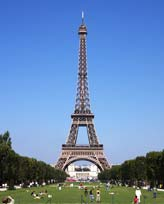

París (en francés Paris, pronunciado Acerca de este sonido [paʁi]) es la capital de Francia y su ciudad más poblada. Capital de la región de Isla de Francia (o "Región Parisina"), es constituida en la única comuna unidepartamental del país.
Está situada a ambos márgenes de un largo meandro del río Sena, en el centro de la cuenca parisina, entre la confluencia del río Marne y el Sena, aguas arriba, y el Oise y el Sena, aguas abajo.
